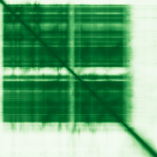
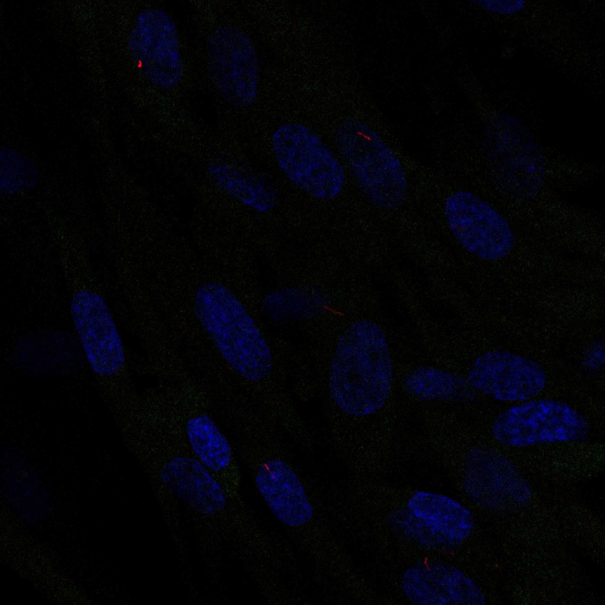
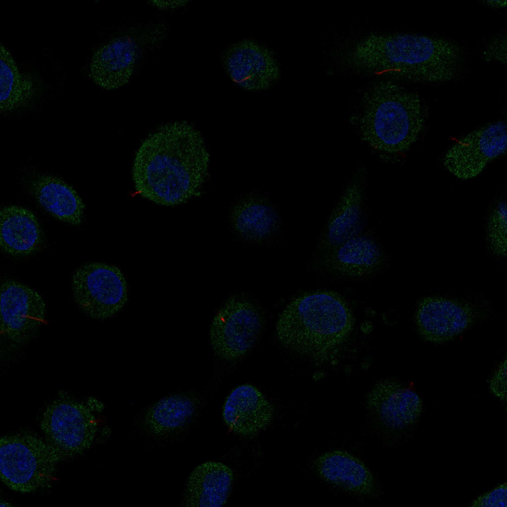
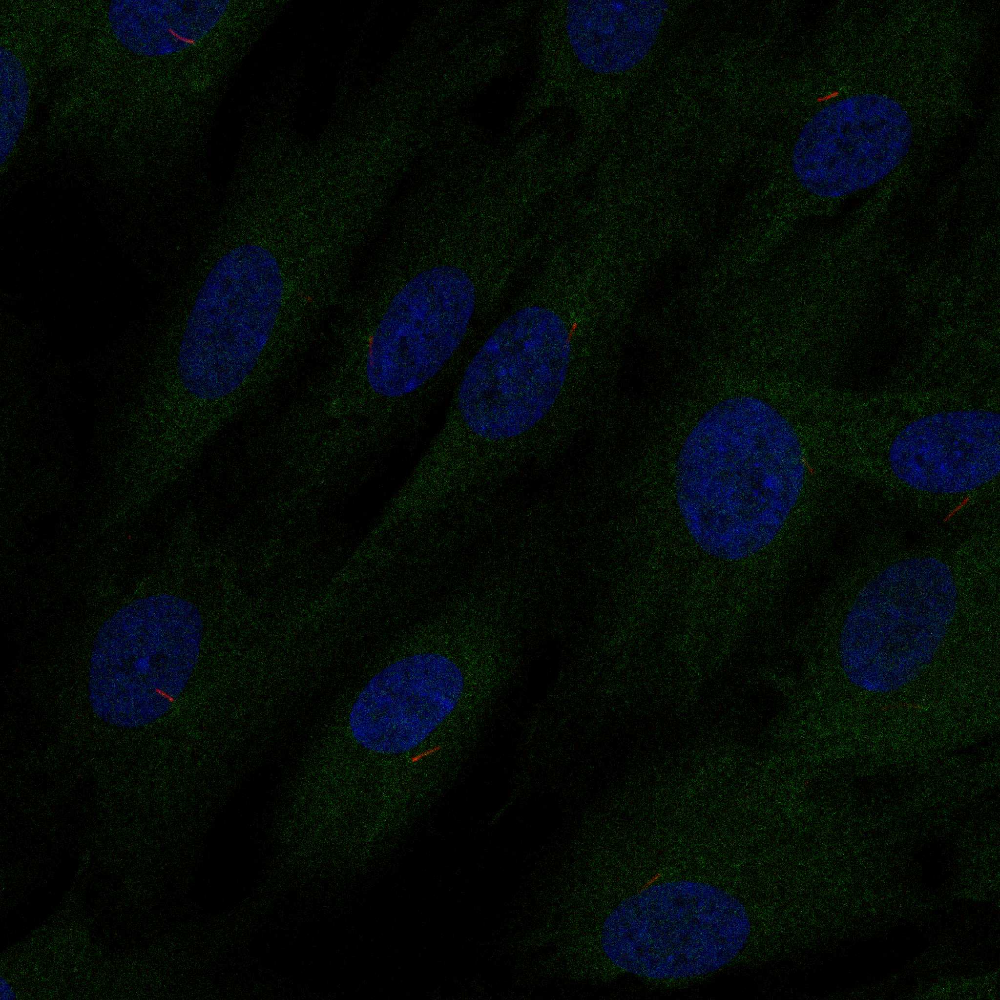

type: protein-evaluation gene: "CAMK1D" date: 2026-06-01 tags: [protein-scout, nucleoplasm, evaluation] status: scored ---
CAMK1D 核蛋白评估报告
1. 基本信息
| 项目 | 内容 |
|---|---|
| 基因名 / 别名 | CAMK1D / CAMKID |
| 蛋白全名 | Calcium/calmodulin-dependent protein kinase type 1D |
| 蛋白大小 | 385 aa / 42.9 kDa |
| UniProt ID | Q8IU85 |
2. 评分总览
| 维度 | 得分 | 新权重 | 加权后 | 关键证据摘要 |
|---|---|---|---|---|
| 核定位特异性 | 5/10 | x4 | 20.0 | UniProt Cytoplasm (ECO:0000305) + Nucleus (ECO:0000305); GO-CC cytoplasm (IDA) + nucleus (IDA); HPA Nucleoplasm + Cytosol (Approved) |
| 蛋白大小 | 9/10 | x1 | 9.0 | 385 aa, 42.9 kDa, 中等大小的激酶 |
| 研究新颖性 | 4/10 | x5 | 20.0 | PubMed strict=78, broad=118 |
| 三维结构 | 9/10 | x3 | 27.0 | 7 PDB 结构 (含 1.48A 全蛋白); AlphaFold mean pLDDT 75.7 |

| 调控结构域 | 4/10 | x2 | 8.0 | Protein kinase domain (IPR000719, IPR011009); 非染色质结构域 |
| PPI 网络 | 4/10 | x3 | 12.0 | IntAct 15 条; STRING 502 error; UniProt CAMK1(3); 以 Y2H + co-IP 为主 |
| 加权总分 | 96/180** | |||
| 互证加分 | +0.0 | |||
| 归一化总分 (÷1.83) | 52.5/100** |
3. 详细分析
3.1 核定位证据
| 来源 | 定位 | 可信度 |
|---|---|---|
| UniProt | Cytoplasm (ECO:0000305) + Nucleus (ECO:0000305) | Curator 推断 (非实验证据引用) |
| GO-CC | cytoplasm (IDA:UniProtKB), nucleus (IDA:UniProtKB) | 实验支持 |
| Protein Atlas (IF) | Nucleoplasm (main, Approved) + Basal body + Cytosol | HPA Approved |
| Function | 激活 CREB/CREM 转录因子 (在神经元核中磷酸化 CREB1) | 功能支持核定位 |
HPA IF 状态: HPA IF Approved，定位 Nucleoplasm (main, Approved) + Cytosol (main) + Basal body (additional)。6 张 IF display images 已下载，多个细胞系（U2OS, A-431, U-251 MG）展示核质分布。
  
结论: CAMK1D 在 HPA 中呈现 Nucleoplasm + Cytosol 双定位 (Approved)，GO-CC 提供双重 IDA 实验支持，功能上磷酸化核内 CREB1 转录因子。但 UniProt subcellular location 标注为 curator 推断 (ECO:0000305) 而非实验文献引用，且为 Cytoplasm + Nucleus 双定位而非纯核。
3.2 结构与数据源
| 指标 | 数值 |
|---|---|
| AlphaFold | AF-Q8IU85-F1 (v6) |
| 平均 pLDDT | 75.7 |
| pLDDT >90 | 46.2% |
| pLDDT 70-90 | 23.1% |
| pLDDT <50 | 25.7% |
| PDB | 2JC6 (2.30A), 6QP5 (1.90A), 6T28 (1.55A, full-length), 6T29 (1.48A, full-length), 6T6F (1.97A), 8BFM (1.70A), 8BFS (1.95A) |
| InterPro | IPR011009 (Kinase-like), IPR000719 (Protein kinase), IPR017441 (Protein kinase ATP binding), IPR008271 (Ser/Thr kinase active site) |
| Pfam | PF00069 (Pkinase) |
CAMK1D 结构数据极其优秀：7 个 PDB 结构覆盖激酶域和全蛋白，最高分辨率 1.48A (6T29, full-length)。AlphaFold 置信度中等偏高 (mean 75.7)。CAMK1D 是本批次结构数据最好的基因之一。
3.3 研究现状
| 指标 | 数值 |
|---|---|
| PubMed strict (Title/Abstract) | 78 |
| PubMed symbol only | 109 |
| PubMed broad | 118 |
| 别名 | CAMKID（未用于 scoring） |
关键文献：
- PMID:39271683 (Gujarati NA et al., 2024) -- Podocyte KLF6-CaMK1D 信号减轻糖尿病肾病 (Nature Comms)
- PMID:30054458 (Xue A et al., 2018) -- GWAS 鉴定 143 个 2 型糖尿病风险变异 (含 CAMK1D)
- PMID:37277610 (Vivot K et al., 2023) -- CaMK1D 信号在 AgRP 神经元促进饥饿素介导的摄食 (Nature Metabolism)
- PMID:41419457 (Sun F et al., 2025) -- CAMK1D 激活 AMPK/PINK1/Parkin 线粒体自噬促进前列腺癌耐药
- PMID:35494053 (Jin Q et al., 2022) -- CAMK1D 通过 PI3K/AKT/mTOR 抑制胶质瘤
CAMK1D 研究热度中等偏高 (strict=78)，主要集中在代谢疾病（糖尿病、肥胖）和肿瘤信号转导。作为 Ca2+/CaM 信号通路的激酶，参与 CREB 转录调控、线粒体自噬和胰岛素信号。
3.4 PPI 网络（三源综合）
| Partner | Source | Score/Evidence | Relevance |
|---|---|---|---|
| CALM1 | IntAct | affinity chromatography (PMID:16512683) | CaM 信号 (经典互作) |
| CAMK1 | IntAct | co-IP (PMID:28514442) | CaMK 家族 |
| CUL3 | IntAct | Y2H (PMID:21988832) | E3 泛素连接酶 |
| CDC25A | IntAct | Y2H (PMID:21988832) | 细胞周期磷酸酶 |
| BNIP3L | IntAct | Y2H (PMID:21988832) | 线粒体自噬受体 |
| ASAH1 | IntAct | Y2H (PMID:21988832) | 神经酰胺酶 |
| GNRHR | IntAct | co-IP (PMID:28514442) | GPCR |
| CAMK1 | UniProt | 3 experiments | CaMK 家族 |
PPI 数据以 Y2H 筛选和 co-IP 为主，CALM1 是唯一有生化证据的经典互作（CaM 亲和层析）。STRING 数据未获取（502 error）。PPI 支持 CAMK1D 作为 CaM 下游激酶的功能角色，但网络密度和可靠性一般。
4. 总体评价
CAMK1D 是一个 Ca2+/CaM 信号通路激酶，结构数据极优秀（7 PDB 含 1.48A 全蛋白），HPA IF Approved 支持核质双定位。但作为信号激酶而非染色质调控蛋白，结构域评分偏低。研究热度中等偏高 (strict=78)，不太符合高度新颖的筛选需求。
5. 数据来源
- UniProt: https://www.uniprot.org/uniprotkb/Q8IU85
- AlphaFold: https://alphafold.ebi.ac.uk/entry/Q8IU85
- PubMed: https://pubmed.ncbi.nlm.nih.gov/?term=CAMK1D
- Protein Atlas: https://www.proteinatlas.org/ENSG00000183049-CAMK1D
HPA IF 图像已本地嵌入。
PAE 图像暂无数据（未生成本地图片或未可靠获取），结构判断基于AlphaFold pLDDT统计。